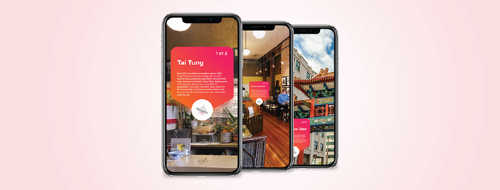
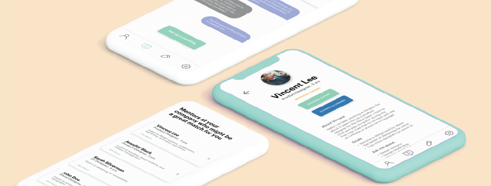
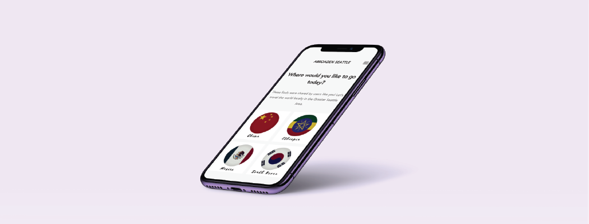
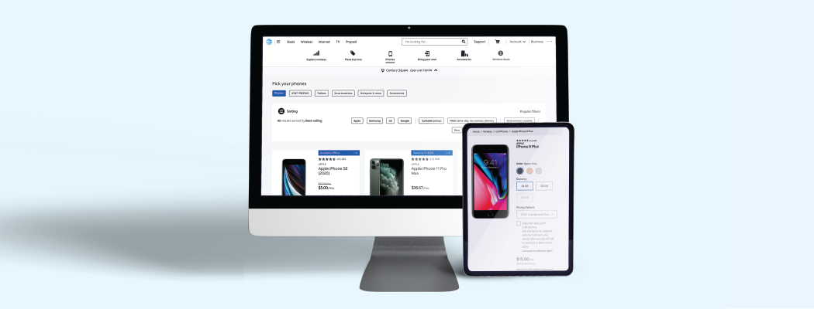
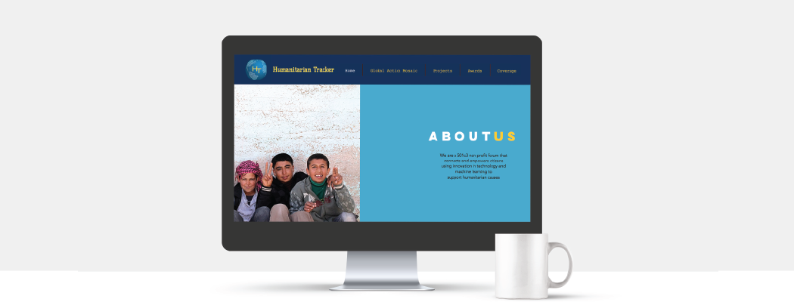
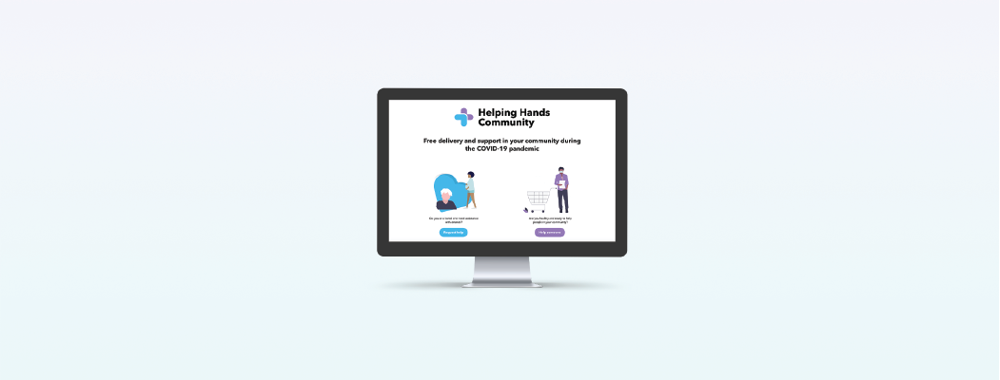
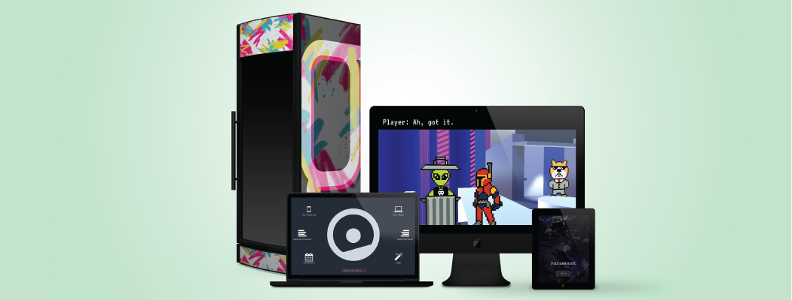

An augmented reality tour sharing the little known history of the diversity that built and shaped Seattle. All you need is your iOS device.


A solution to increase retention within technology companies by connecting new hires from underrepresented backgrounds to mentors in leadership positions.

Travel the world locally with Abroaden. My team's platform won T-Mobile's Diversity and Inclusion grant and was released in the App Store and Google Play.

As a UX intern at AT&T, I supported the company-wide redesign by working on the device list page to make the purchase of new phones faster, simpler, and more cost efficient for the customer.

I'm currently running design and partnerships for a global nonprofit by focusing on our Global Action Mosaic platform in partnership with the United Nations.

Helping Hands Community was created to slow the spread of COVID-19 through tech-enabled, community volunteerism. I'm designing for non-traditional methods of support.

Additional Work
Learn MoreI prototyped a wearable for diabetics, designed a retro-future adventure game in Unity, and developed a trash sorting game. Check out some of my side projects here.